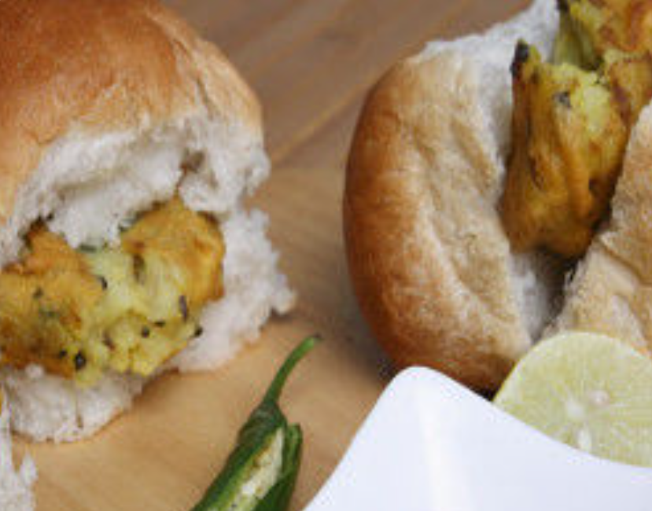
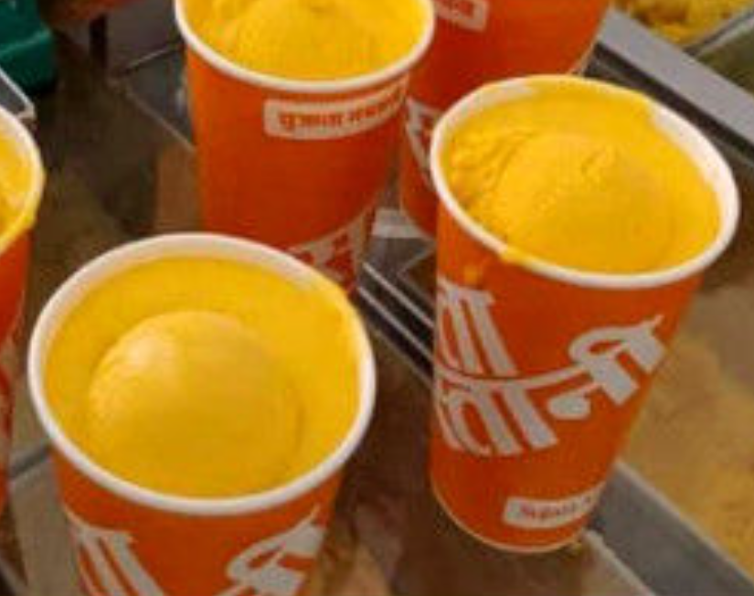
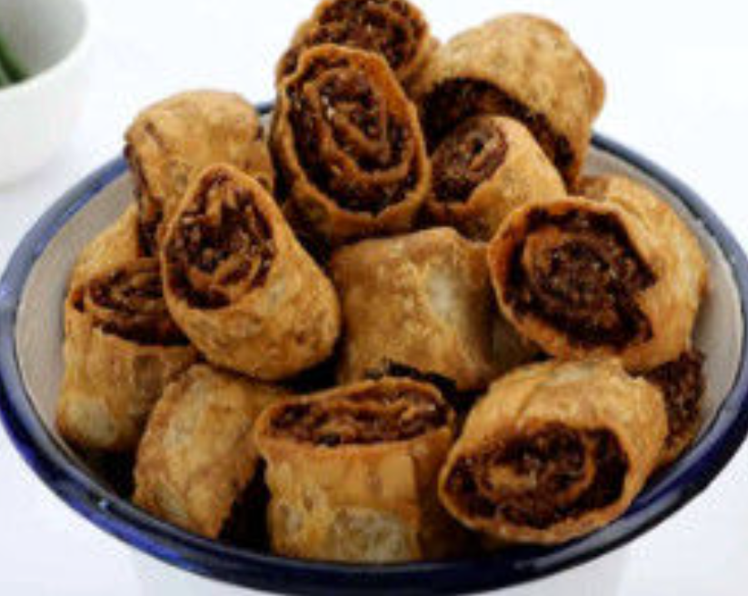
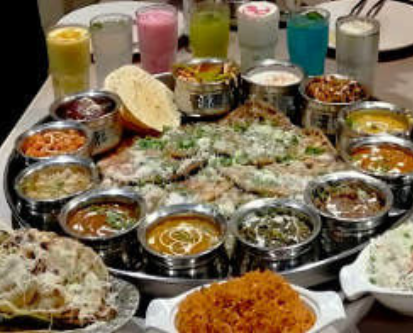

The Pune city is famous for its weather, hills, IT parks, and reputed educational institutions. Pune is also known for its food. What makes Pune’s foods so special? Are they small eateries that got established years aback and have gain fame over the years? There are lip-smacking delicacies to eat in Pune, you need to look out for. We are here to help you find the best food in Pune. Scroll down and see why Pune won our heart straight away!
Kata Kirr is the best place to eat in Pune if you want some mouth-watering missal variety. You can choose between the light, medium and spicy versions of the dish, which means there’s a misal pav for every palate here! This one is a crowd favorite.Where: Kata Kirr, multiple outlets When: 08:00 am to 05:00 pm (Tue-Sun)

One of the oldest and most Pune famous eatery, Garden Vada Pav Centre is legendary for serving (arguably) the most famous Vada Pav in Pune. The taste and texture are unsurpassed, and the portions are huge, which is always a good thing. Also, don’t forget to ask for some churra with your yummy vada-pav. Where: Garden Vada Pav (All outlets) When: 09:00 am to 10:00 pm
According to legends, the name 'Mango Mastani' stems from the warrior princess Mastani's name who had floored the Peshwa king Bajirao with her beauty. So if you are looking for famous food in Pune then you should not miss Sujata Mastani for delicious Mango Mastani. Where: Sujata Mastani, multiple outlets When: 10:30 am to 11:30 pm
Savoury roll that is stuffed with a wealth of spices and deep-fried. It is a tangy Indian snack and Chitale Bandhu is the best food place in Pune. You should also try the Mango Barfi, this too is awesome. No one should leave Pune without trying the absolutely delish Bhakarvadis from Chitale Bandhu. Where: Chitale Bandhu, multiple outlets When: 08:30 am to 01:30 pm and 03:30 pm to 8:30 pm
Cafe Goodluck of Deccan Gymkhana is one of the oldest Irani cafe restaurants in Pune. Bun Maska, Cheese Omelette and Keema Bread are the most popular breakfast items for Punekers. It is one of the best eating places in Pune. Where: Café Goodluck, multiple outlets When: 07:30 am to 11:30 pm
This link will take you to pune's transport page
Pune's Transport